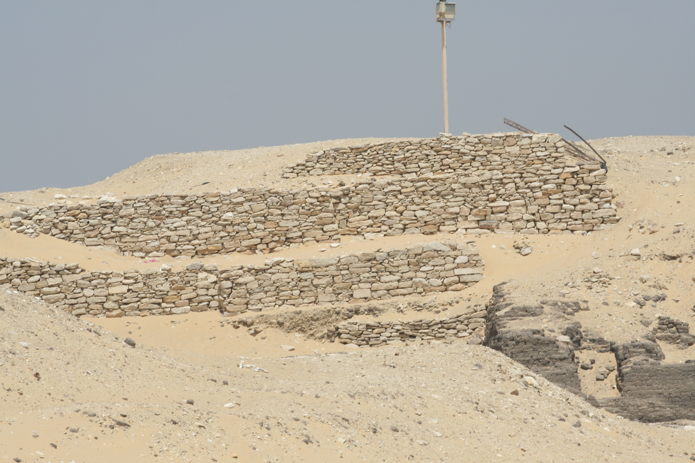

TOPICS
Essays
on miscellaneous topics
Short
stories
Academic
writing
Travel «
Social
& political comments
Theater-acting-teaching
kids
Entertainment
reviews
Pets
My
family & its history
Other
personal autobiography
MY BLOG
e-mail me
Egypt (April, 2009)
On April 8-22 Maxine and I took a Lindblad/National Geographic tour of Egypt.
This account starts with some general observations that the trip triggered and then goes through events day by day.
NOTE: Maxine thinks my opening comments about our six fellow travelers were inappropriate. I don't, but until all this is clearer to me, I'm deleting that section. The core message: there was a deep incompatibility between some of them and me.
References to "H." are to our guide.
Money,
money, money
Guidebooks had warned about the frequency with which money would be solicited or conned from us, while assuring me that small tipping (baksheesh) is an important custom not to be ignored. I wanted to accept this, but…
I will break small-scale money annoyances into three parts:
1. Required service for minor necessary matters, most tellingly tips for toilet attendants. H. had told us to do as Egyptians and tip 1 pound (about 18 cents). I felt chintzy about that, however, and the attendants’ (almost always women in religious garb) roles of handing out toilet paper and keeping the lavatories relatively clean seemed to me so noxious, that I routinely tipped 5 pounds on the principle that they needed the money far more than I.
Although a service charge is typically included in a meal bill, much of this apparently doesn’t actually go to waitstaff and so you're supposed to add maybe 10%.
A subcategory here is unnecessary services for which baksheesh is apparently traditional, such as if someone holds a door for you. Since other than doormen (never women) at our fancy hotels no one held a door for me, I didn’t have to address this category.
2. Unnecessary services foisted upon the unwary tourist by people of all ages (though almost always male) and all job categories (again, men, including the tourism police).
The most common scam of this sort, or rather the one I most remembered from the guidebooks, was offering to be photographed and then demanding payment. So I avoided this until a tourist, uniformed cop invited me to photograph him on a camel; this is when I learned that Egyptian cops could be as venal as cops anywhere. (Driving outside Moscow in 1965, my two companions and I were stopped thrice by traffic cops, each of whom commandeered one rouble from us.)
In all such cases, payment is never mentioned until after performance of a service you never realized was one. When offering the service, the man will be ingratiatingly submissive with the tone of doing something for you because you are clearly someone special. And if you don’t tip something because you didn’t ask for the “service,” he’ll pursue you in simulated outrage as though you're cheating him. The “service” is often encouragement to ignore some law or principle of common sense that would help protect an ancient site; apparently many tourists are eager to abuse artifacts for their private gratification.
The first time I got duped in this way was entering a tomb in the Valley of the Kings and being handed a flashlight by a winking ticket-taker. For a moment I thought everyone got a flashlight, but a few steps inside the tomb I realized otherwise. The flashlight was no use to me—indeed a burden because I had to carry it—and had a nearly burned-out bulb even if I wanted to use it. When I left, I handed the ticket-taker the flashlight and his tone reversed as he gestured for baksheesh. I was sufficiently intimidated to hand him a pound (at which he sneered) but sufficiently angry to give him nothing more.
A flashlight gambit occurred again in the Valley of the Queens, in a tomb for a foetal prince (i.e., a miscarried boy of a pharaoh’s wife—I don’t think this was common). Here a tomb guard whipped out a flashlight to illuminate the foetus (a tiny skeleton). This was actually helpful, except that we had a flashlight of our own…. He shone the light inside the sarcophagus (I can’t remember if there was anything to see)—and then on a ceiling tile which he proceeded to rub vigorously and offered me, with an ingratiating pooh-poohing of my resistance, to rub. After a moment of startled silence at this obviously common abuse of ancient material, and resisting the desire to pull his hand away from what he was rubbing, I refused the invitation.
On the next-to-last day of the trip, at the Giza pyramids, I had just taken a photo of Maxine when a local middle-aged man in galibeeyah stepped up and gestured for me to hand him the camera to take a picture of Maxine and me together. Sucker that I am, I took him at face value as a genuinely friendly local (though I kept a careful eye on the camera…). Even as Maxine and I were posing, two cohorts came up, yukking it up with great camaraderie, and, as their colleague snapped away, posing with us and draping me and Maxine in Arab headdresses, as in the following wretchedly framed photo:

My eye on the camera (and my nerve-endings on my various pockets), I took back the camera as its holder genially informed me that $5 would be fine for all three of them. (What I should have done was show him each photo he took and delete it in front of him—another of life’s endless examples of wisdom after the fact.) I pulled out a 5-pound note. “No, no. Dollars!” My intimidated hand returned the note to my pocket and pulled out my wallet. A dollar bill passed into his hand and I started to walk away. “No, no, the others!” With more hesitancy I fished out another dollar bill and handed it to the second fellow. I began to walk away. The third shuffled alongside as I walked, variously demanding and pleading in Arabic in unmistakeable tones and gestures, “What about me?” I waved to him to share with the others. Eventually he backed off—but only after, I think, a fourth man, involved with camel rides we were about to take, signaled him with a nod to leave. As we walked towards the camels, this fellow jovially asked if I was happy now. “No,” I said. He looked puzzled, and we proceeded to the camels. I wonder how many people worked this location together.
These experiences remind me of squeegee men—those guys who wipe (I won’t say “clean”) your windshield as you wait in traffic in a large American city and then expect payment. In that case, there’s an added factor of physical intimidation: the squeegee guy will seem to behave as though he has performed a service for which failure to pay is a kind of assault. (I've never seen one of these guys actually being threatening--I think that image is a projection of us drivers.) Just as in a U.S. city, the Egyptian version often has a racial dimension and tension: in New York City my experience of the squeegee con is of black youths, probably dressing to fit the worst white stereotypes, “cleaning” the windshields of white drivers who respond as desired to the stereotypes; aside from any fear generated by the interaction, the context is intensified by whatever white guilt runs through the drivers. (For all I know, the squeegee men are equal-opportunity predators without regard to race, ethnicity or religion.) In Egypt, instead of black-and-white, the dynamic is native-vs.-foreigner: the dark-skinned scammers dress in traditional (or what I think of as traditional) Arab garb (quite possibly their dress of choice in any event) and play the stereotype of the obsequious and friendly local on the one hand, the aggressive and aggrieved victim of colonial chauvinists on the other. I expect many of these guys are perfectly decent sorts when they're with friends and family, as many of the squeegee men may well be.
3. Souvenir vendors. Virtually every public area to which a tourist might go is chockablock with vendors of schlock items—postcards, shirts, lute-like instruments, statuettes of pharaohs and camels and tomb relics, jewelry, souvenir pencils, maps…. These people are aggressive. They push things in your face, they block your path, if you don’t reply to them they speak more loudly and then tap your arm. They shout prices in your ear, then lower the prices if you don’t engage with them at once. (Guidebooks seem to portray this behavior as endearingly authentic and encourage tourists to go into bargaining mode.) They act as if they can’t believe you don’t want to buy their wares. They ask you questions like, “Where are you from?” not of course because they care but as a way to get you to start talking to them so they can wheedle in return; I was bemused by how many tourists, out of some code of behavior irrelevant to this context, felt obligated to reply to such questions.
In cities this happens pretty much anywhere you go (tourist pathways are highly predictable, after all), and elsewhere it happens on the way into tourists sites. In addition, on the way out, which is rarely the way you came in, you almost always have to pass through an arcade of souvenir stands and itinerant sellers. If you take a boat to cross a river or lake to a site, the “pilot” is like as not to uncover his own set of wares in the midst of the boat.
The vendors apparently are individual entrepreneurs who get their wares from local suppliers who know them and give them time to pay for the goods they take to sell.
* * * * * * * * * * * * * * * *
I’d like to say that my hatred of the scams and the intrusive vendors is motivated by the desire not to enable demeaning behavior, however patrician that might be. But that’s not true. I viscerally recoil in anger at the behavior with its presumptuous intrusion on my movements and thoughts even as I dismayingly recognize its deeper truth.
I do believe that such behavior is the result of social and economic conditions that provide little opportunity for meaningful engagement with the economy. Islam encourages charity, but it also encourages virtuous and satisfying lives for its congregants. I seriously doubt that the culture of baksheesh and let-me-tell-you-what-I-think-you-want-to-hear is part of that tradition, especially since so much of this behavior is directed at non-Muslim tourists who cannot be expected to empathize with a Muslim tradition. I suspect, rather, that at least part of the source for the behavior stems from the 19th-century Middle Eastern bull market in European and American tourism. (I should look back at Edward Said’s Orientalism, which probably illuminates some of this context and is a great book for getting perspective on Western images of “Oriental” cultures. A useful, much shorter 2004 complement on how those same cultures have viewed the West is Ian Buruma and Avishai Margalit, Occidentalism.)
The situation is intractable, and we tourists have culpability, if not in our immediate behavior then in the lives we have inherited in our homelands as a result of past colonialism and imperialism. Any foreigner—probably any Westerner in particular—who can afford to make these tours surely has enough money to pay out pittances to local residents. And after all, isn’t the service provider giving at least the semblance of actually working and not asking for a handout? And given the history of Western exploitation of (in this case) Egyptian resources, geological as well as cultural, don’t we owe something in return? The answer to these questions, of course, is “yes.”
More. It is a crime and an outrage that so many men (and sometimes women, sometimes children) are reduced to such self-abasing behavior to survive, that their leaders don’t provide enough meaningful opportunities to earn a living, that our own government is in collusion to maintain this regime in power regardless of its attention or inattention to the well being of its citizens, its abuse of civil liberties, its manipulation of elections. Why isn’t our government demanding accountability from theirs instead of colluding with it to send for torture prisoners to whom we have denied habeus corpus?
Do we really believe that so many men are content to be reduced to the level of wheedling other human beings (or sometimes to involve their own wives or children in the wheedling)? Do they really enjoy bargaining over trifles to feed themselves and their families? Deep down, perhaps at an unconscious level, does it gratify them to adopt the obsequious veneer used to lure us to their spiels, or the righteous anger if we don’t come through as they want? Is the satisfaction they get from promoting crap as worthwhile goods or “winning” a “negotiation” really the highest end of any human life? Or isn’t that a rationalization for the fact that they feel they have nowhere else to turn for dignity and achievement?
For such people we must be walking ATMs for which they have a few passwords that log them in a fair amount of the time. And we do hold the cash, the means to their daily well being. Why do we avert our eyes from the sadness and in many ways hopelessness of their plight and instead gloat when we bargain a few pennies in our favor that mean nothing to us and a great deal to them?
When a ticket-taker or guard or cop offers to perform or allow illegal services, it is a reminder that whatever the official line, the ancient heritage of their land has little meaning other than as an income source for people desperate to feed themselves and their families. As Romans long after the fall of the Empire (for example) lived among their ruins herding goats and chipping off useful chunks of stone, so ordinary Egyptians now and in centuries before have often seen their monuments as free housing, sources of building material, structures within their villages of importance only if they could be used for something (like table surfaces). Why should their heritage mean to them what it means to visitors (or what the visitors are told it means) and their own, distant, social and intellectual upper crust?
Today, for whatever their mysterious drawing power, these decrepit ruins attract tourists (including me) by the ton. These visitors may be quietly loathed for expecting special treatment (which they get) and reducing local people to servants or walk-ons for scenic verisimilitude, but the foolish tourists will pay (or can be intimidated into paying) if you help them treat the monuments as their personal property for at least a few seconds.
Surely not helping to change such an attitude is the fact little by little the central government is re-locating people who have been living on promising sites for excavation and will likely be doing so for some time to come. Near the Valley of the Kings is a large swathe of land that until recently had local homes--hovels, more than likely, but how many times have enlightened governments (including our own--recall the TVA, for example, and other infrastructure building plans) forced seemingly improved living conditions on stubborn people who don't want to leave what may have been family land for generations?
* * * * * * * * * * * * * * * *
Our trip included a 6-day Nile cruise with many stops at ancient sites. As we sailed lazily in the middle of the river, we might wave at little children on the bank who often waved and called to us words we didn’t understand.

I formed the conceit that we were visible gods regally floating by and gracing them with useless benedictions. And for all we know, they are calling for help, sustenance, support. Except for these picturesque, romanticized moments we will never be relevant to their lives nor they to ours. The cultural and economic chasm in the 100 yards between us might as well be parsecs between stars.
These people have no reason to like us or treat us well, and those who do may be fools, traitors to their countrypeople, rather than gentle folk who rise above economic inequities and communicate on a universal plane of humanity. Why should there be peace between us or respect or any feelings other than envy and anger? We from the West who take these tours are cultural descendants, and in some cases biological descendants, of those who exploited their grandparents and great-grandparents and connived with their rulers to bleed their land of resources and keep them in their states of stubborn survival. (I don’t say “misery” because I suspect people like this find ways to enjoy their private lives with family and friends. Allah or Amun-Ra help them if they can’t.)
In the last few days of our tour, I realized that I wasn’t looking at Egyptians as individuals. Because to look at them was taken as a signal to engage in some kind of negotiation, I avoided seeing their faces—just as I assume they, who must see tens of thousands of tourists in a year, make no differentiation among us tourists beyond nationality and language. So I pushed myself to start looking even if it brought attention, which after all I knew how to sidestep. However much I hated the generic behavior towards me, I began to see them as individual human beings. And quite by accident, I may have found a non-hostile way to turn them away.
Up until then I had at best coldly said “No, thank you” in Arabic, and if they persisted I raised my voice and firmly repeated, “La, la, la!” (“no, no, no”!). But at our final day’s visit to the very first stab at building a pyramid (the “step” pyramid), when a vendor approached me and asked what I would like, I found myself looking at him and saying, “I really would like just to be left alone.” He said something that I thought was a prelude to pursuing the matter, and I started to protest, but in fact he was walking away saying something equivalent to, “That’s cool.” I didn’t get another chance to see if this approach would work routinely—to see if, in short, some kind of bridge between me and “them” is possible without mutual contempt
Miscellaneous observations
When they were available, I read English language newspapers.
- I was surprised to read that Egyptians had some legal recourse against perceived injustice; I was not surprised to learn that this process could readily be subverted, and that the availability of a justice system did not mean people were always allowed to have recourse to it.
- It is against the law to deface pictures of the president, Hosni Mubarak. A TV network or film company had been fined for televising film of a demonstration that did exactly that. Originally fined maybe $25,000, they just won a court appeal that reversed the verdict on the basis of insufficient evidence.
- For many months an Egyptian blogger had been jailed for (allegedly, but probably really) anti-state postings. He has just had his 8th court order for release, but the police retain him.
- The papers report unfavorably on Israel treatment of Palestineans. (I usually agree with the tenor of such claims; I just doubt that the reporting is any less one-sided in its way than pro-Israel reporting in the U.S.) At the same time, they published reports that an Egyptian official has agreed to meet with the new (and extreme right-wing) foreign minister of Israel, Avidor Lieberman, and that there is controversy over whether this is the right thing to do.
- Some Hezbollah members in Egypt were recently arrested for plotting against Israel. The Egyptian government is issuing firm pronouncements about the rightness of doing this, but the papers also report opposition to the arrests in other middle-east countries.
- Archaeological discoveries are given top coverage. The possibility that the burial location and mummies of Antony and Cleopatra have been discovered got prominent play. So did the discovery of 53 tombs (covering 2000 years) that had been unearthed near Fayum (maybe 50 miles southwest of Cairo), complete with colored photographs of some of the finds. In both cases, Zahi Hawass (head of the Egyptian antiquities department and someone from whose comments it is hard to escape) got his face and words into the reports.
- A government regulatory agency has promulgated tight restrictions on the distribution of cement (actually, has taken steps to make cement much more readily available), as a result of which the price of cement has been reported to be dropping. Of course, I can never be sure whether such official positions are real or posturing. In many places where construction seemed to be going on, I did notice large troves of stacked bags of cement. For example:

- The Coptic Orthodox Easter was widely publicized. Only 19% of Egyptians are Christian, but the day is a national holiday. (I read that there are 1000 Jews left in the country. And on a related Egypt-and-Jews note, I understand that the only "historical" evidence for the Exodus is the Old Testament.) For Easter, it is a widespread tradition to eat a special, very salty fish; a news article reported government discouragement of this practice because, while when properly prepared the fish can be enjoyable, if NOT properly prepared (as in having been purchased on the cheap) it can be poisonous.
History and vandalism before the advent of the Vandals: We (and that includes me) typically mourn and shake our heads in disbelief when we learn that a particular historical monument has been defaced or destroyed by zealots. (We're not so happy, either, when the destruction comes from natural forces, like the recent area near Rome devastated by an earthquake, but we're more easily philosophical about that than when humans are behind the destruction.) Remember those two giant Buddhas blown up by the Taliban in Afghanistan a few years before 9/11? However much I lament such seemingly brainless and doctrinaire behavior, however, I have to understand that it, too, is part of the history of the region and its cultures. In ancient Egypt, two traditions of this sort are prominent in my mind. During dynastic times, pharaohs would sometimes try to erase evidence of a hated predecessor, most notably by having his (or her) various names chiseled off monuments and friezes, but sometimes by having images themselves destroyed or altered. (Pharaohs had at least five names, and knowing the secret ones could give one unacceptable power over the corresponding pharaoh.) The second example is Upper (i.e., southern) Egypt Christians of the first several centuries AD: where they found “pagan” carvings they would chisel away everything within bodily outlines, so that you can still kind of recognize a shape but can see no detail within it. This was no easy task: such vandalism is widespread within and among monuments. Why did they do this? Probably multiple reasons: purging temptations to “paganism,” obliterating obscene images (i.e., bare flesh uncovered by tunics), proving their own piety and diligence (this was long hard labor; many of the images were above a man’s height). What seems to have saved many carvings is that they were covered with windswept sand and other detritus so that the vandals could not see them—and apparently did not think to search below ground next to images they could see.
The government clearly takes its tourism seriously and has many security safeguards. All of that, I gather, is in response to a 1997 terrorist attack that killed over 50 tourists and must have severely damaged Egypt’s foreign currency influx from tourism. (I recall a very recent kidnapping of several tourists who had traveled to a quite out-of-the-way location in Upper Egypt. To drive to a number of areas is either forbidden or requires joining a scheduled policy convoy.) Tour groups are closely monitored. Tour leaders have to notify the government (presumably the tourism ministry) of their daily schedules, and at each site police check on the buses going in and out. Entrances have barriers in staggered rows to deter vehicles smashing through (though to me it looked as though a determined driver with a reinforced vehicle could get through them). Tour groups over 10 people require police escorts everywhere they go. (I assume the tour companies have to pay the salaries.) On the Nile cruise we had 2 to 4 cops with machine guns (blurred in the photo) on board, in the stern of the communal outdoor deck, every day:
In our last days in Cairo we had a cop in plain clothes on the bus. His weapon appeared to be some kind of small machine gun that ran the width of the back of his jacket and was obvious even to my untrained eye. It may be a little hard to see in this photo, but look at his jacket between and just below the elbows.

I don’t think I felt any safer with a cop aboard our buses, at least. It seemed to me he made a handy target, and that any self-respecting attackers would start by machine-gunning the windshield (is it, perhaps, bulletproof? if so, how to what degree?) of a bus , behind which the cops sit. On our final afternoon in Cairo Maxine and I were supposed to go by ourselves to Old Cairo, but it turned out that a cop and guide were required to go with any tour members. (I don’t know what laws I broke when I took a cab by myself.) For multiple reasons we decided against the excursion. But the knowledge made me feel trapped. What if I wanted to get around by myself—for example take the Cairo Metro somewhere? Between the tour itinerary and legal requirements, we were shielded from a great deal of Egyptian life. Going on our own would have given us much more freedom, but also much less understanding of what we were seeing or where exactly we should go.
Pretty much every public place you go--monuments, hotels, stores--has a metal detector at the entryway. I always set it off, but no guard ever stopped me. At our last hotel, however, I saw an Egyptian wedding party coming through the detector, and they were checked. All people are equal but tourists are more equal than Egyptians.
Except in affluent areas, garbage is widespread on sidewalks, embankments and irrigation canals. I say this not to sneer but to depict an example of the distance between the elite and the rest of the population in this society. Here's a scene from a small Nile town below (that is, north of) Luxor:
 And
along an irrigation canal outside Cairo that feeds agricultural fields
(notice also the incomplete buildings and laundry hanging out to dry,
both common sights wherever we went):
And
along an irrigation canal outside Cairo that feeds agricultural fields
(notice also the incomplete buildings and laundry hanging out to dry,
both common sights wherever we went): And in
modern-day Memphis (near Cairo, a visit on our last day):
And in
modern-day Memphis (near Cairo, a visit on our last day):
Cairo traffic is routinely worse than even Manhattan at rush hour. Traffic lights appear to be optional, and drivers readily switch lanes with little room to spare. (I noticed that taxis, at least, were quite banged up. Apparently a minor brush or "kiss" is ignored.) Crossing the street in such traffic seems death-defying, but it looked to me as though drivers and pedestrians had a silent pact that allowed both of them to move with little room to spare.
Many ordinary Egyptians volunteered their enthusiasm for Obama.
References to "pagan," i.e., pre-Christian (and maybe pre-Moslem) Egypt troubled me. (H. once referred to "pagan" as part of a list of some kind, and I asked which particular group was pagan... This probably didn't endear me to anyone, either.) "Pagan" is, of course, a disparaging comparison between a previous (false) religion and one's own (or at least one's society's) current (true) set of beliefs. Historically, I have the impression that Islam used "infidel" in a similar spririt, and though Christianity has also referred to Moslems as infidels, "pagan" seems to have been the term of choice. (I haven't noticed whether Judaism has any tradition of such terminalogy; my studies have focused on Christo-centric history and especially Renaissance and Reformation Europe, when the relevance of "pagan"--i.e., Greek and Roman--thought was a very touchy subject.) Without wishing to disparage individuals who have a religious faith (nearly everyone I know, whose personal virtue is typically shaped by their religious beliefs), I distinguish between individuals and religious institutions, which I find historically riddled with unpalatable traditions and goals--especially those categorized as "fundamentalist." (I say this with some empathy for the commitment and sense of community, not the beliefs or actions, of fundamentalists. For 3+ years, I once dated a woman from a fundamentalist Christian background....) Any distinction between polytheism and monotheism to buttress pagan vs. "true" leaves me cold: I fail to see why the former is any less superstitious than the latter. As an example: between dynastic Egyptian belief in various gods and the Christians who defaced their monuments, who was "pagan"?
In Cairo we had cable TV in the hotel rooms. Essentially useless: U.S. programs had no obvious schedule, and they were reruns, sometimes from years back, sometimes from the current season. CNN International and BBC World Service broadcast exceeded my worst expectation about the emptiness of their reporting. A current "critical" story (like the capture or tracing of a U.S. ecoterrorist--I wasn't clear which) would get endless coverage that consisted almost entirely of raising issues that didn't exist and talking about them at length. (I'm reminded of Daniel Boorstin's principle expressed a few decades ago of the pseudo-event, a kind of unacknowledged conspiracy between the media and publicity-seeking people or institutions to create a non-story and then run with it.) I've seen similar crap on U.S. cable news stations, including CNN, but it rarely was as bad as what I saw routinely on these international news channels. Among its contributions to a culture of high pap, BBC had about as much sports reporting as other news. The net effect of sporadically watching these stations was to let me know what the stations' supervisors wanted viewers to think was important.
I experienced that curious phenomenon of service people with a vested interest in the tasks they are trained to. On the Nile cruise, for example, when I tried to serve myself at times, staff would rush out and almost wrestle serving implements out of my hand. It could be that they're trying to protect their jobs, but I doubt it. It is more plausible that they fear being caught not doing their jobs, but at least as likely I think is that they develop a need to have things done according to the rules of the class they're serving. I found most service people distantly ingratiating.
The cruise used the eco-scam I see everywhere I go now: save the environment by not sending your used towels for washing. On the one hand, they then almost always provide towels barely good enough to dry you from a single shower. On the other hand, they themselves waste energy by the megawatt, as with all the unnecessary cutlery that hoity-toity table-settings require or the empty posh stateroom that had its AC on all the time. The waste of food must have been humongous: the boat takes 40 or 42 passengers when full. We were 8 plus our guide. Lindblad chartered it anyway. (I'm not sure they could have done anything else, and for us passengers it was certainly luxurious to be so uncrowded.) At each meal the amount of food seemed enough for at least 20 people. I can only hope that they distributed it to needy people in the town where we docked, though it was probably so rich that their stomachs wouldn't handle it.
Brief background that may help give context to parts of my account (or "5000 years in 6 paragraphs")
A single ruler united Upper (southern) and Lower (northern; the Nile delta) Egypt about 3100BC. Pharaohs (= kings) ruled in about 30 dynasties (a dynasty = a related group of rulers and might last from a few years to a few centuries). Three divisions of ancient Egypt are traditional, separated by 100-200 year periods of disunity and foreign rule: Old Kingdom (about 1000 years), Middle Kingdom (400 years) and New Kingdom (home rule for about 800 years and then 700 years of foreign pharaohs, mainly Persians and Greeks). The last ruler was the Cleopatra we know, though actually the 7th of her name, who ruled during the Greek suzerainty, which started in 332 BC when Alexander the Great (after whom Alexandria is named) conquered the country.
The pyramids were built primarily not by slaves but by farmers who had no work during periods when the Nile flooded. The first pyramid, a variant on previous single-layer phaoronic tombs called mastabas, was built about 2650BC (that is, 450 years after Egypt’s unification), and all major pyramids were built within the rule of five successive pharaohs and all near Cairo, west (considered the direction of the afterlife) of the Nile; the three most famous are the 5th (the largest, built by Kufu/Cheops), 6th and 7th, grouped at Giza to the southwest of central Cairo. Pyramid building continued through the Middle Kingdom, while New Kingdom pharaohs shifted to building tombs that were dug into earth, the most famous group of which is the Valley of the Kings near Luxor in Upper (southern) Egypt. About 130 pyramids are known in modern Egypt, most of which are rubble--e.g.:.

Remnants of some mastabas:

Most (not all) of our knowledge of ancient Egypt is from hieroglyphs (deciphered in modern times by a Frenchman in the first quarter or so of the 19th century after discovery of the rosetta stone in 1799) at tombs and temples—that is from information that rulers wanted people to have, so that we need to be wary about what we trust— and a great deal of that knowledge is about death and dying.
The Nile flows south to north (when Egyptians in the Middle Kingdom invaded the Tigris-Euphrates area, they didn’t know how to describe the reverse flow of those rivers) and provided a path for transportation (the current took boats north, reliable breezes took them south against the current) as well as a source of agricultural fecundity. The well-being of the nation was dependent on sufficient (but not too much) flooding each year; famines were not uncommon. To this day “green” Egypt is a narrow band on each side of the Nile, with desert expanses east and west. In the 1960s Nasser had the Aswan dam built; a number of western nations collaborated to rescue monuments that would be flooded by the lake (Lake Nasser) that would be created once the dam began operating. The dam’s great virtues are that it regulates Nile flooding so Egypt is no longer at the mercy of inconsistent flooding, and it is a major source of electricity generation; its drawbacks include a degeneration in silt quality downstream and maybe some adverse effects upstream.
The Roman and Byzantine Empires ran Egypt for 6 centuries after Christ (whose parents are reputed to have hidden out with him for awhile in Egypt), during which time Coptic Christianity slowly flourished. After that Persians briefly held sway and then, starting in 640, Moslems. A number of Moslem dynasties, sometimes surrogates for external Moslem conquerors (most notably the Ottoman Empire from 1517-1798) ruled until 1798, one of which (the Fatimids) founded Cairo in 969.
In 1798 Napoleon invaded Egypt without much success once the British arrived to challenge him. Until 1952 and Nasser’s revolution, Egypt was in general turmoil, sometimes ruled either by typically autocratic and corrupt officials colluding with or undermined by Europeans, and by England (1882-1952). The Suez Canal was built under French guidance between 1854 and 1869.
HERE BEGINNETH THE DAY-BY-DAY ACCOUNT
Wednesday, April 8, 3:20 pm
Eearlier, we sat in the NYC apartment trying to keep occupied. Excited. Anticipatory. Nervous. Now we're in the Delta lounge at Kennedy. Check-in was easy only because (thanks to mileage) we're flying business class. The coach line was long-long-long; and Delta had only two agents on duty for everyone checking in—and one agent started a long phone call with a customer. Delta apparently has no interest in customer convenience once you've bought your ticket—unless you've bought a premium ticket. I found myself outraged for the people on line, grateful that we had business class.
The gratitude was increased when we got to use the special lounge—quite, comfortable, wi-fi available, snacks and wine included.
Our flight is supposed to board in 15 minutes. I continue to work on Arabic vocabulary and grammar--nervous about whether I'll get to use any of it, and if I do what I'll remember, and whether I'll make any sense. I have found very confusing the vocabulary differences between "classic" Arabic and Egyptian, and I've had many questions I would have liked to ask a guide to the language. Still, I'm satisfied with what I've learned in the sense that I'm not going crazy about what I keep forgetting or who much I still don't know.
We both find it hard to believe we're really going. I'll take an ambien (sleeping pill) this evening and hope I get a good enough night's sleep on the plane to fool my body into thinking it's more or less on Cairo time when we arrive there at 9:30 am. We have the whole day to ourselves; it will be nice if we can use it to do some touring rather than catching up on sleep.
My current ipod book is on the history of Alexandria, which I hope will add an angle on Egyptian history to what I've so far read or listened to. I'm about ready to re-listen to Barbara Mertz's history of Egypt, which I found pleasantly sceptical and cynical as well as comprehensive. I forget so much....
Thursday, April 9, noon Cairo time
Largely uneventful flight, almost 10 1/2 hours. Business class had tons of legroom, and the seat straightened to maybe 135 degrees, but although flying overnight and taking a full dose of ambien, I couldn't sleep until a couple of hours before they woke us for "breakfast."
Getting through passport control was slow buy easy, as was customs. Four of our six other passengers were on the same flight, and we met them at the airport when Lindblad personnel picked us up. As usual, we did not warm to our fellow-travelers, at least for the nonce.
Our hotel, the Four Seasons (adjacent to the east bank of te Nile on one side, the Cairo zoo on the opposite side) feels like a 19th-century colonial residence with a few 21st-century accoutrements (like modern plumbing). Alas, when we finally reached there after a slow van ride from the airport (traffic is about as dense as one is led to expect) Maxine and I were both exhausted (though she slept a lot longer on the plane than I). I soon lay down and was out for three hours. Maxine napped some and then went to the pool deck, which seemed spacious and pleasant when I visited her there.
Midnight: slept for a few hours, have taken an ambien and am catching up on this journal while waiting to conk out. For reasons beyond my ken, my cursor on this laptop keeps jumping elsewhere on the page (or even to another window); it never did this before.
We took a short late-afternnoon walk in the area—over to the Nile and along it for a few blocks. We were warned that you take your life in your hands when you cross a Cairo street, but my NYC technique (hardly original to me, I’m sure) worked fine: waiting for enough distance for a car to brake (the traffic is too heavy for anyone to weave quickly) and then stepping into traffic with outstretched palm towards the nearest oncoming driver.
The Nile here is crammed with large restaurants and other tourist boats reminiscent in size and shape of Mississippi paddlewheelers. One boat tried to look as if all its outside walls had hieroglyphs, but as far as I could tell they were merely a few faux-hieroglyph shapes in a repeating pattern. (NOTE: I have read that "hieroglyphic" is only an adjective, and the noun is "hieroglyph.")
Few women were on the street, and most of them were either in groups (perhaps wearing scarves, perhaps not, usually young) or, if alone, in versions of elaborate burkas. One sole woman sans burka strode confidently along. I didn’t notice any men eyeing her.
Alas, I had no money for baksheesh at first, but did get to use my meager Arabic to say so. At first opportunity, I withdrew money from an ATM, then asked at the hotel to change it into small bills. I had the impression from guidebooks that a single Egyption pound note would suffice (as our guide would later confirm), but I asked to make sure and was gently but firmly informed that would essentially be an insult—the value was too little. So now I will get a supply of 5- and 10-pound notes to carry about. I’ve always hated tipping, partly for purely selfish reasons but partly because we shouldn't live in an economy in which people are dependent on the whim and judgment of another person over whom they have little control.
The infrastructure in our area is in considerable decay. Perhaps they're revamping the lighting along the Nile, but a small thicket of wires (live?) protruded from the uneven pavement (often with gaps where cobblestones no longer lay) every several steps. Side streets and many buildings look in disrepair. The NYC and Cairo mayors might have much to talk about on this score.
Connected to our hotel is an upscale mall surely frequented only by those who look as if they have the kind of money that needs to be spent there. Profiling is alive and well. To enter the mall you must pass through a security gate and show bags for inspection. Maxine and I, however, were waved through—even though the gate made a slight beep as I passed through it. Nothing there was of interest—and probably everything there is also available on Fifth Avenue.
Too tired to investigate where to go for a good restaurant. Our walk indicated none locally other than those on the river, and we are warned—O those endless warnings—that it is unwise for our good health to eat in neighborhood restaurants or from street carts (another avenue closed off for getting a sense of everyday Cairo life). So we had a very tasty dinner at a hotel restaurant with a Lebanese theme. Lamp chops, shish kebab, stuffed vine (grape?) leaves, crudites, bread… Multiple personnel served as at different times. Too much service.
Back in our room a little after 8, I soon lay down and slept until awakening and continuing this journal.
It is too early in the trip to be sure, but I suspect it’s not merely a skewed data set that I have repeatedly experienced responses from others that seem to have little to do with questions asked—or even questions that I had no intention of asking. The Lindblad rep who met us at the airport spoke a good game of wanting to answer questions and be helpful, and he was ineed fine at his appointed job of getting us through the airport and to our hotel and into our rooms, but he seemed to have his own agenda about what information he would provide and not to answer questions directly (perhaps because he understood them, perhaps because he didn’t…). Hotel and restaurant staff seemed similar, almost frighteningly polite and attentive even when you wanted to be left alone. It may be that their English, which is fine as far as it goes, is limited and they're not comfortable acknowledging when they don’t understand something. One especially unctuous member of the staff—a manager of some kind—assured (or seemed to assure) me that I would find free internet service in the Lebanese restaurant and the hotel’s business center. When I couldn't get a wireless connection at dinner, he had someone come who told me that none of this service is free—but then, when I looked unhappy at having been given misinformation, he entered a code that would keep me online for 24 hours. (Hence my feeling of pressure to get as much as possible recorded before dinnertime tomorrow night). This same manager had offered strong friendly advice not to leave the hotel to walk along the Nile. I imagine there is some feeling, perhaps reinforced by actual behavior, that tourists (just American tourists?) are incapable of fending for themselves without getting into trouble. And perhaps there is also a psychology of diminishing the chances of baksheesh going somewhere else. No doubt sociological studies exist that address such possibilities.
Tomorrow to the Cairo Museum, holder of the most Egytian antiquities in the world but nonetheless shy of many accumulated in the 19th century by museums in places like Paris, London, Berlin and New York. (Sharon Waxman, Loot, provides a thoughtful, balanced look at the pros and cons of returning previously “looted” antiquities, like the Elgin Marbles in London or the Nefertiti statuette in Berlin, to their home countries.) I expect the tour to feel overwhelming, and I am optimistic that our guide for the rest of the trip, a trained Egyptologist, will both help us make the most of the visit and answer questions she is actually asked.
A final note for today. I am doing ok at reading Arabic signs, sometimes even making some sense of what they say, but I have understood no more than a scattered word when people talk in Arabic.
1:30 am now. I have to try to get back to sleep.
Friday April 10 (incomplete--hurrying to post this before my internet connection is gone...)
Slept so well that Maxine had to wake me to get our day started. Copious breakfast buffet, and at 10:30 first meeting with our guide. She seems quite knowledgable. This introduction was about practical matters like safety and money. (She says leave one pound for baksheesh and you don’t need to tip for most things. I wish I could get standardized advice—one never knows the agenda underlying advice.)
From there it was on to the Egyptian Museum, a place for which we received many guidebook warnings about lack of information on exhibits. It was good to have a guide, though far more exhibits than I expected had brief identifying information. The museum looks its age of 100+ years but I suspect that is part of its charm. The collection is humongous and quickly overwhelming. A replacement museum is being planned, and in theory it will catalogue and comment on the thousands and thousands of otherwise anonymous items on display and off.
I especially looked forward to the Armana exhibits—the brief (17 years) period when the cantankerous pharaoh Akhenaton ruled, in the 14th century B.C. He is reputed to have tried the only stretch of monotheism in ancient Egypt. But what draws me and others to the relics of the period is the relatively modern art—a realism and interest in nature that feels vibrant and committed. To my surprise, the exhibits here weren’t as copious or varied as those in New York’s Metropolitan Museum of Art. One set of tall, complementary statues shows an elongated face unfamiliar in the relatively formulaic images of most other pharaohs. He also has a distended stomach, which like depictions of other pharaohs with seemingly distorted body parts has been attributed to a specific disease. (A statue of one pharaoh with disproportionately large legs has been assigned to elephantiasis.)
As I think happens to everyone who views them, I never stop marvelling at the preservation of much of the art of the "period," here most noticeable inside coffins. I will see much more of this phenomenon as we visit temples, pyramids and post-pyramid tombs. I put "period" in quotation marks because I have the strong sense that seeing a 3000-year stretch of any history as a continuous time of little change is as mistaken as treating U.S. history from the colonies to the present as a relatively unchanging continuum. Aside from frequent power struggles, occasional re-divisions and re-unitings of Upper and Lower Egypt, there were cultural changes (like burial customs, personal fashion, adoption of cultural patterns from conquered and conquering peoples) and technological inventions (like the water-pumping shadoof, in use until recent years, introduced about midway through the ancient dynasties).
Inevitably, I guess, the museum (or at least the tour we took) stresses upper class ancient Egypt in general, royalty in particular, and death in even more particular. This is no different from my grade school history book, but I hoped for a more subtle treatment. Our knowledge of ancient Egypt is heavily prejudiced, of course, by the allure of death monuments and royal temples, inscriptions for which reflect images their namesakes wished to present. Modern Egyptologists seem able to approach their subject with appropriate scepticism and critical care, but even the informed spiel of our guide is laced with assumptions and predispositions to present a favorable spin about what she relates.
I suppose the biggest problem I have is widespread embrace of Egypt as the first civilization, and a great one at that. (Those are two different questions: what is civilization? what makes one great?) It may be unfair to project modern values on an ancient times, but I would think it’s at least fair to try to describe it with relative dispassion. If early societies really couldn't evolve other than as class-ridden with resources flowing to the high-born while most people had to settle for subsistence, we needn’t then go all gooey when recounting how the high-born managed to fight off invaders or conquer others (and enslave captives) or build great monuments to themselves or create trade routes and infrastructures dependent on the suffering of most people who toiled to support the creations. Judging the “success” and “failure” of rulers and societies should require some careful evaluation of the assumptions underlying those judgments.
Still, I enjoyed the museum visit and did learn a fair amount from our guide’s explanations. (I also found that my reading and listening to recordeded books to prepare for this trip has been quite helpful.)
 This photo
is from our hotel room looking
west. If you look
verrrry carefully
where the trees and buildings meet the sky at the center and left of
center,
you'll make out smog-screened images of two pyramids.
I think they're 15 miles away.
This photo
is from our hotel room looking
west. If you look
verrrry carefully
where the trees and buildings meet the sky at the center and left of
center,
you'll make out smog-screened images of two pyramids.
I think they're 15 miles away.

Tomorrow: Islamic Cairo.
Saturday April 11
Tough day for me today: I was exhausted and have some intestinal problem, though not necessarily a bug. Although I fell asleep early (9pm?) I woke at midnight, was up for maybe an hour, and then woke at 4:30 and couldn't get back to sleep.
We had an early breakfast and started our touring at 9am: The Citadel (a 13th-century fortress inside Cairo), an 1805 mosque built within those walls by Mohammed Ali, and then the Ibn Tulun mosque, built in the 9th century. The 1805 version I found largely unappealing—dirty, run down, minimal creativity (though it also seem to be undergoing major remodeling that will take a long time). The much older mosque, still in use, felt far more satisfying and harmonious. (Or am I just another American who responds, “older is better”?)
Some photos of the Mohammed Ali mosque:
 A few yards opposite the
mosque's main entrance: commercialism was never far from ancient or Islamic sites
A few yards opposite the
mosque's main entrance: commercialism was never far from ancient or Islamic sites
I did like the gleam and curve of the mosque's dome

This clock, now not working, was a present from France around the 1830s. France and Britain were both busily trying to win favor and power in North Africa, in part for military reasons, in part to facilitate trade and communication with India and the rest of Asia. (Is "military" vs. "trade" a false distinction?)

Here's an indication of the renovations going on.

And to me, this angle makes the mosque, aside from the domes and minarets, look like a prison.


 View of Cairo from outside the
mosque. Notice
what appear to be relatively delapidated tenements in the front half of
the photo and seemingly new construction in the upper left.
View of Cairo from outside the
mosque. Notice
what appear to be relatively delapidated tenements in the front half of
the photo and seemingly new construction in the upper left.The two other men in the group, in their mid-late 70s, decided to climb the stairs of the rather tall minaret at the Ibn Tulun mosque (of which I have no photo). I could only admire their intrepidity while lamenting the time this would take. While waiting their return, I spent a good deal of time in the street outside the mosque. Later in the trip, they would happily, loudly and triumphantly recall their ascent as they shouted back and forth about new, daring treks they might take.
Photos of this mosque and its environs:

Inside of dome

Inner courtyard

Closer look at housing beyond the inner courtyard (notice the commonplace proliferation of satellite dishes)
Some street scenes outside the Ibn Tulun mosque, moving right to left:

View of street perpendicular to the side street fronting the mosque

Down the street a bit

And farther down

Notice the shop to the left of the white plastic chair. This is a butcher's with slabs of meet hanging in the open. When I tried to photograph this close up, the proprieter yelled at me. I thought he was just being persnickety, and I bowed and sarcastically said in Arabic, "Thank you, thank you." H. later explained to me that recent Egyptian law had banned such hanging of meat, and the proprieter wouldn't want a pictorial record of his violation.

I cropped this from another photo of the butcher's and expanded it. During the rest of the trip I would notice the same violation in various places.
H. took us to a special Egyptian restaurant in the middle of the main Khan el Khalili market area where, I believe, many tourists were gunned down in a 1997 attack. The area itself, once a souk (bazaar, market) for Cairenes as well as visitors, is now entirely a tourist market. I cannot count how many times I said, “No, thank you,” in Arabic to accosting vendors. I’d had a big breakfast, and I wasn’t feeling well, so I had only a cup of tea at the restaurant. Though I wasn’t hungry, H. insisted on having a lunch box prepared for me to take to the hotel.
I had toyed with skipping this part of the day’s outing and returning directly to the hotel, but lunch was not supposed to last long, there would be only a 45-minute walk afterwards, and it seemed to me that though I was exhausted and sleepy, it was pointless to cut that short. Lunch, however, dragged on and on, and finally I decided I was so uncomfortable that I couldn't last any longer for touring. So I told H. I wanted to catch a cab.
H. was clearly not comfortable with my finding a cab and negotiating the fare myself with my highly limited Arabic, so she walked me to a nearby square. As we walked back through the souk, I realized I was hardly ever being accosted by shopowners. I mentioned this, and we speculated that perhaps the shopkeepers target (1) women and (2) men accompanying women (because those men will surely be susceptible to their female companions’ undoubted addiction to shopping).
The square at the edge of the souk was flooded with cabs, all seemingly in transit: technically, they were not supposed to stop. H. addressed one driver, hesitated, wasn’t comfortable with him, then negotiated with a second driver and told me to pay 30 pounds. As we started to pull out, she ran up and said to give him five pounds more to cover a bribe he had to pay to a cop. I said, only half-jokingly, “Maybe you should write down the cab number just in case.” “I already did,” she said.
The taxi ride back to the hotel was an experience all its own—everything you might expect from reading the guidebooks about Cairo driving. Actually, aside from the general proviso that traffic lights were optional, I’m not sure the ride was any more harrowing than it would have been, say, in Rome. Cutting in and out of traffic with little room to spare, the driver made relatively little use of his brakes—by which I mean he was pretty confident of what he was doing.
The street layout felt like Paris, major thoroughfares and boulevards lined with storefronts and angling off from one another. Most streets we took had several lanes of traffic, and most cabs (at least) had multiple bruises. H. would later tell me that touches that barely damage the car are ignored. At one point while we were in the left lane of a 2-lane right-of-way, proceeding at maybe 30-40 mph, I saw a car (not cab) to our right in which the driver kept honking, and although she never made an effort to switch lanes, her left signal seemed permanently flashing. She was wearing the religious dress that leaves just face and hands showing. In her right fist, which moved like a programmed automaton between resting on the rim of the steering wheel and punching the horn every few seconds, she gripped what must have been a cell phone. Her other hand was in her lap.
From the back seat of the cab I watched pedestrians singly and in groups. They crossed the wide streets as anyone might in any large city with heavy traffic, sometimes talking on a cell phone, sometimes in conversation, seeming hardly needing to look at the traffic. Yet their timing (and the drivers’) was a perfect pas de deux: each paused at different moments, sensing I suppose when the other would or wouldn't have to. I have no idea of the rate of pedestrian accidents in Cairo, but in my limited experience I wouldn't be surprised to learn it is minimal.
Perhaps because I wasn’t feeling well, I was far less anxious about the hectic ride than I would have expected (which doesn’t mean I didn’t have my heart-sinking moments), and I arrived safely at the hotel in due course. I flopped in bed with a bottle of water near at hand, alternatively listened to a book on my ipod, solved puzzles in the Herald-Tribune, and napped and napped and napped. I couldn’t stop feeling tired. When Maxine got back—and her return was much later than I expected even when I finally left the lunch restaurant—we consulted. I did not seem to be running a fever, and I didn’t think my problem was more than jet-lag tiredness. I continued to have short naps, 10-15 minutes, and that night I skipped the fancy-shmansy “welcome” dinner at Le Pacha 1901, a restaurant floating on the Nile. I reassured Maxine I would be ok.
Around 7:30 I began to have stomach cramps that would ease only briefly and slightly. Some early form of diarrhea added to my joy. I groaned steadily, a common indulgence for me when I’m not feeling well—it releases pressure—and the one fringe benefit of Maxine’s not being in the room. I started fantasizing about having to see a doctor, having blood drawn (or transfused?) or an IV inserted against dehydration, and I obsessed about how to get such medical care that wouldn't risk HIV contamination. We have ample travel medical insurance, but how to get it used correctly? Phone the US embassy? Call Lindblad? The health insurance policy issuer? Then I worried about my moaning all night and keeping Maxine up. Maybe one of us should get a separate room?
I began to want Maxine desperately to return, but I didn’t want to interrupt the dinner. After 2 ½ hrs I finally phoned H. They had just left the restaurant, but it was a half-hour away.
That night I started to take Cipro and ibuprofen, included in our pharmaceutical hope chest for the trip. (Each trip has taught us yet another medication to bring in future.) Perhaps just because of the comfort of having Maxine there, I soon felt much less pain and, having taken a full dose of ambien, was able to relax and fall asleep without much trouble after reading some pages on Coptic Egypt (tomorrow’s outing). I awoke a couple of times during the night, read more of these pages, and slept again.
Sunday, April 12
I was still pretty miserable and tired in the morning, had no interest in breakfast (though I did eat a little unbuttered bread and had a cup of cocoa), but decided to dress and get ready for the morning’s excursion to Coptic Cairo, promising myself I wouldn't go if I didn’t feel up to it. I knew I might be in denial. As we waited for the van, I asked Maxine’s advice. She of course could give me none. Just as we were ready to leave, I had a flash that I wasn’t up to this outing, and I returned to the room. My greatest concern was being able to fly the next morning to Luxor and participate in the excursions to ancient Egyptian sites.
I napped a lot, intermittently. Somewhere yesterday or today I ate half an apple over a half hour or so. I didn’t recoil at the sight of it, so I tried it; and it was good. But plenty.
(Incidentally, nausea was never part of my symptoms—I just felt repelled at the idea of any food.)
“Coptic” Cairo is perhaps a misnomer; the coptic area is within the oldest part of Cairo. Since Cairo wasn’t founded until 969 (by Fatimids from further west in North Africa who drove out the ruling house of just 34 years, the Ikhshidids) and the Copts were Egyptians in the early centuries after Christ, I suppose “Coptic” Cairo must be a part of the city to which Copts migrated under Fatimid rule. My main knowledge about early Christian Egypt is the profusion of monastaries and hermits, some who like Simon of the Desert stood atop tall pillars for years to demonstrate their sanctity.
Turns out that since this was Palm Sunday the Coptic churches weren’t in the tourist business. But the group visited other parts of the old city.
Most of my Sunday was bedridden with frequent naps, solving of puzzles, and a bit of ipod listening to the book on Alexandria. At 4:30 I stirred myself to attend a lecture by a Cairo University Egyptologist, M.A. Nur El-Din, originally scheduled for yesterday. I introduced myself and warned him I might have to leave during the talk. I said this partly as a cover if I didn’t like the lecture, and after 45 minutes I did leave, indeed feeling a bit sick but frustrated by the lecturer’s manner. He adopted an informal, chatty pose which he used as a waystation to an imprecise and overly personal lecture. Like other Egyptolgoists I have encountered, he felt it necessary to do a riff on the nonsense of the aliens-built-the-pyramids claim, and he made several ironic references to the failure of Western nations to return cultural items looted from Egypt, including the Rosetta Stone. Having read Sharon Waxman’s account, I knew that while his core claim was fair (and before reading her I assumed it was the right claim), I now knew that matters were more complex. It wasn’t his claim that annoyed me but his failure to include a nuanced critique. He is, after all, an academic.
[Friday, April 17: I’m writing much of this day’s account on Friday as I catch up with material I haven’t had time to record since being sick, and as I have thought more about this issue, I have decided that the lack of nuance is not so much academic laziness (though it may be that, too) but a different academic focus from mine. Just as medieval artists could ignore physical perspective when painting Madonna and child because the moral perspective was more important (let’s put aside the issue that three-dimensional perspective had been lost), or as during a disaster a normally thoughtful person might ignore nuances and form a quick judgment about how best to weather the immediate crisis, so an Egyptian Egyptologist may be more concerned with righting perceived injustices than covering all the pros and cons of the looted-antiquities arguments—doing which would only distract from the true goal. I will also note that for everyone else on the tour, the lecturer probably pitched his material at just the right level.]
Aside from this minor issue I was frustrated by a talk full of interesting topics but lacking much detail, so I played my illness card and quietly left the lecture. Maxine and I went for a light dinner (I had half a bowl of pasta and tomato sauce), and we tried to go to sleep early.
Monday, April 13
Southward ho! But not in comfort.
We learned a few days ago that because our group is so small, Lindblad would forego the promised private air transport to and around Upper (southern) Egypt, and we would instead fly Air Egypt. On the other hand, Lindblad was still leasing the entire Nile cruise boat, Triton, which holds 40 passengers, for just us. Perhaps had I not been sick I would have viewed this as, “you lose some, you win some,” and perhaps had I not been recovering from illness and also disgruntled about a couple of our companions who seemed non-consciously bent on hi-jacking the trip, I wouldn't have minded the prospect of less comfortable travel. But in plunking down premium bucks for luxury which I would normally repudiate, I felt aggrieved that I would have to go through the usual airport procedures and crowds. (We asked why Lindblad wouldn't hire a small plane and were told the smallest would be for 45 people, far too many. I wonder. Perhaps the small planes Maxine and I took 10 years ago in the African bush are not available in Egypt or for such distances.)
Did I mention that because we were taking the commercial flight, and to get our Upper Egypt touring in sync, we had to get up at 4:30am? The gentle reader may conjecture about how that affected my mood.
We got through it all and arrived at Luxor airport, from where, while our bags were being ferried to our riverboat rooms, we took a van to Karnak, a large temple complex affiliated with the Valley of the Kings (which we visit tomorrow). We began at a visitor’s center with a wonderful model of the Valley: the hills were recreated in a thin white muslin-like substance (for all I know, it was muslin), and beneath, attached to the corresponding tomb entrances on one side, were scale models of all the tombs below ground, with their chambers and tunnels. I took photos to try to give a sense of the model, but they don't do justice to it. For one thing, for some reason I only photographed the underside (the replication of underground tomb chambers) of the model and not the top (the outside, valley view of entrances to the tombs), which you would see if I could rotate the photos 180 degrees along a vertical axis.
 The
upper, white part of the photo that resembles an oyster is supposed to
be the INSIDE of the valley; the metal protuberances beneath that are
small models of tomb chambers and their connecting tunnels. If
you could see the other side, you would see that where these chambers
disappear into the white of the valley, they come out on the other side
as tomb entrances. The perpendicular metal bar a
third of the way from the left is a support for the model. The
door in the upper left leads out to Karnak, a couple of hundred yards
away.
The
upper, white part of the photo that resembles an oyster is supposed to
be the INSIDE of the valley; the metal protuberances beneath that are
small models of tomb chambers and their connecting tunnels. If
you could see the other side, you would see that where these chambers
disappear into the white of the valley, they come out on the other side
as tomb entrances. The perpendicular metal bar a
third of the way from the left is a support for the model. The
door in the upper left leads out to Karnak, a couple of hundred yards
away.
This is a closeup of the tomb chambers-and-tunnels on the right of the previous photo. It's a little easier here to see that the different tombs are at different angles to the surface of the valley, and some are longer than others.
When I looked up from snapping these pictures, I could see no one in our group. The room was not large, maybe 40-50 feet on each wall, and I kept looking around. I went outside and saw no one there. From here you walked to Karnak several dozen yards away. I looked that way and could spot no one. I went inside and outside a few times, wondering if the group had gone ahead, and finally deciding it must have, though I couldn't imagine how Maxine wouldn't have noticed my absence. But the only explanation seemed that this is what happened, and that by the time anyone noticed I was missing they agreed I would catch up with them. So after a few more in-and-out looks, I headed for the temple.
Inside, I couldn't enjoy what I was seeing because I felt I must find the group, and that anyway without H.’s guidance I had no idea what I was looking at. I covered most of the tomb’s area (it is quite large) and feared we might have crossed paths when, after a half hour or more of this, I saw them coming down the main avenue from the entrance. They had been waiting for me, had searched for me elsewhere, and Maxine had finally persuaded H. to proceed to the temple. I was angry with them; they were surely angry with me for having wasted so much of their time. I felt I had made the sensible choice—though I had remembered that the best strategy for two people (or groups) to find each other is for one to remain in one place; I just hadn’t wanted to wait for them to come back from the temple to the visitors’ center….
I was pleased to find that all this effort did not exhaust me, though I was certainly tired by the end of the day. My illness seemed to be under control.
We had our outdoor buffet lunch on the boat and then went to the Luxor Museum, a small and lovely modern display of miscellaneous ancient items including a couple of pharaonic mummies.
In the evening we returned to Karnak for a thoroughly boring and pretentious sound-and-light show.
|
My STRONG advice: If you have reached this point in my account and therefore must have some empathy for my general curmudgeonly attitudes, and if you ever go to Karnak, despite the strong pressure to attend this show because “after all, when will I have another chance?” or “what do I have to lose?” resist the temptation. Anything else you do will be more productive use of your time then the considerable amount of walking and standing around listening to a wretched script, historically dubious generalizations and pretentious, obscure images projected on walls. |
Tuesday, April 14
This was a truly grueling day. The temperature was unusually high—over 100F much of the day. Our first and longest outing was to the Valley of the Kings, the site of New Kingdom royal tombs (modelled at the Karnak Visitors’ Center) for its first several centuries (c. 1500-1100BC). These were not pyramids but elaborate tombs built into the the walls of a stony desert valley. When you buy a ticket, it includes access to three of the tombs that are open that day. I took it upon myself to visit the tomb of Tutmosis III, “famous” for having been a “great” warrior and significantly expanding Egypt’s control of lands well into Nubia in the south and southeastern Ottoman lands in thenorth. This visit required ascending many stairs outside the tomb and then descending (and ascending) roughly the same number of stairs inside the tomb. The temperature outside was 100F and above; as you descended inside, the temperature steadily increased until it must have been 120 or 130 at the bottommost level. The drawings were relatively “primitive”—that is, closer to stick figures than the fully developed depictions of people and gods we associate with ancient Egyptian art. At the bottommost room, I am accosted by someone who is supposed to be a guard who hand-signs an offer to take my photo here. (Photographs are forbidden inside these tombs as they are in many places but not in all.)
The antiquities services are trying too upgrade the ancient sites tomb by tomb. Here the wall paintings, still often vivid with original colors, have plasticene coverings (presumably to protect them from guards’ inviting fingers as well as tourist transgressions) and devices to measure something (humidity?—if so, they're learning nothing I couldn't tell them…).
Noble’s tomb (Rahmose, vizier for Amenhotep III, Akhenaton)
MORE TO BE POSTED FOR THIS DAY
Wednesday, April 15
Slow, easy day. Up at 6:30 again, small breakfast for me, and at 7:30 off to the temple of Dendera, focused on Hathor, the cow goddess, one version of which is etched here within the temple:

The typifying features are the horns on her head and the flat sphere—the sun disk—between them. This is a Greco-Roman temple, and I found myself thinking, “how recent, how boring.” Ah the relativism of antiquity!
It was in fact pleasant enough, and I got myself to crawl into a crypt (I went through the three-foot opening backwards on hands and knees), but I found myself beginning to think (or to think further) that this trip is losing any purpose. It is becoming a checklist of places-to-see-if-you-visit-Egypt, and we are relentlessly checking them off. Maxine feels similarly: we don’t need to see every shrine and tomb but rather to have a theme that links them in some way that increases our understanding of life, or something like that.
This is most true with the dominant concern of the trip: ancient Egypt. It’s the difference between writing a summary and a critical statement. I knew when I boned up before the trip that much would be repeated, but I expected my prior knowledge to ease my learning of new things—and to provide a base for some interesting synthetic statements.
We keep getting “facts” and little interpretation. When we get interpretation, it is relatively simplified and often not linked with other interpretations. The problem is colored by the heavy emphasis on royal death rituals and religion. In many ways, a trip like this is a “fact”-enriched (with an enormous amount of such information) version of the most familiar, cliché-ridden Western account of ancient Egypt.
This is probably a result of market pressures (or rather, how companies perceive market pressures) to have tour companies appear not to slight popular images of a tourist locale like Egypt. People may sign up with expectations based on what they already think they know, and may complain if those expectations aren't met. So the (perhaps even unconscious) goal may be to make people feel they are getting a far deeper understanding of what they already know rather than an entirely fresh look at the body of knowledge.
The temple visit lasted a couple of hours and we returned to the Triton to sail leisurely back to Luxor. The weather today has been wonderful, and I have been sitting outdoors—continuing with Occidentalism and writing this journal entry and catching up on earlier ones. As I wrote the above summary of our Dendera visit, I saw children playing at the edge of the Nile, a hundred yards or less away, and lifting my hands from the computer keyboard, I snapped some telephoto pictures of them and a man washing his galibeeyah. Children are especially prone to look at our boat, wave and call to us. I had the thought yesterday as we sailed downstream and I saw children on the bank of how physically close we were and how unbridgeable our lives are—nothing profound, but especially forceful in the moment, weighted more by the chasm between our personal futures (though they should outlive me) than by our cultures. This cruise could, I suppose, be a live Disney event: the relative safety and serenity and insulation from reality of the expensive tourist boat passing for hours between picturesque riverbanks of palm trees, houses and shacks, laundry laid out to dry, people bathing and boating and cleaning household equipment, farmland, minarets, power lines, at least one sugar mill with belching chimneys, distant cars, an occasional sugar cane-toting camel, garbage-strewn embankments…
Maybe better than the Disney image: we’re like gods floating through our holdings, gazing at and being gazed at by our subjects.
The afternoon was quite glorious. We docked again at Luxor just before 6 and spent an hour+ visiting the Luxor Temple, built first by Amenhotep III (father of Akhenaton) and then much expanded by Ramses II 150 or so years later, and now in the midst of the city the way ruins are in Rome. In recent years an avenue bordered by small sphinxes (on pedastals perhaps a tall person’s height) was discovered. It currently ends after 100 yards, where the city continues. But as it has done with houses (hovels by western standards) around ancient sites that may sit atop ancient ruins, the government plans to tear down intervening buildings in hopes of finding the rest of a colossal avenue leading to Karnak, 2 ½ miles away.
Dinner had the first main course I’ve liked on the cruise.
Thursday, April 16
Up at 6:30 again, off at 7:30 to the Valley of the Queens and the Ramesseum, the remnants of a large self-laudatory temple ordered up by Rameses II, who seems to have had a big ego even for an Egyptian pharaoh.
As I understand it, ancient Egypt had no position of “queen” but rather royal or first wife, so I suspect the title is a modern one. It is really a valley of tombs for pharaonic wives and children, and the three open tombs (most tombs excavated so far have been determined to be empty) today were of two princes and one wife. One of the princes was actually a 6-month miscarried foetus, and it is now preserved in a small glass-enclosed case in dim light within its tomb of a couple of rooms.
MORE TO BE POSTED FOR THIS DAY
Friday, April 17
This morning we awoke at 7 and visited the Horus temple at Edfu—the one linked with the Temple of Hathor that we visited two days ago. Many interesting details, and I began to get some sense how such places might keep getting built over time as pharaohs kicked the bucket: according to Hebbe a new temple had a master plan but when a pharaoh died before its completion, the next pharaoh would review (and alter as desired) the plans and make sure his carouche appeared for all pharaonic mages from then on. The images themselves were apparently interchangeable. This at least was the case by the time of this temple, started under later
One passenger commented that the Egyptians must have been a deeply pious people to build these wonderful monuments. He probably believes medieval cathedrals were pious expenditures supported by all. Is it the case that the further back we look in time, the more we are prone to take things at face value rather than look more deeply? If so, why does remoteness offer that escape?
H. says many Nile boats have final-night parties where men come in galibeeyahs and women as belly dancers. One passenger wished we would do that. H. said, bless her, that this Lindblad program is more sedate.
Because the Christian crew members are leaving later for Easter celebrations, the ship had its “gala” dinner tonight instead of tomorrow. Instead of a menu of courses, it was a sequence of single items over which you had no choice. Presentation, as ever, was elaborate. The food was ok.
MORE TO BE POSTED FOR THIS DAY
Saturday, April 18
Sunday, April 19
Monday, April 20
Tuesday, April 21
Wednesday, April 22
On the plane ride home, I watched an Egyptian film, Taimour Wa Shafi’aa (2007).
TO BE CONTINUED